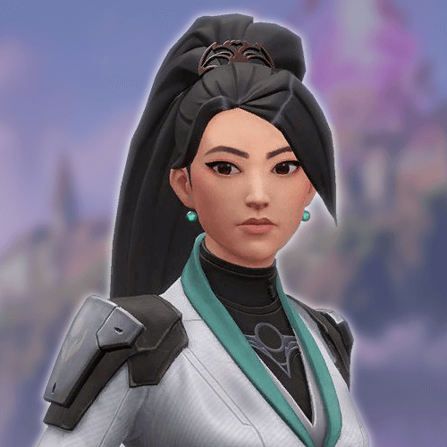
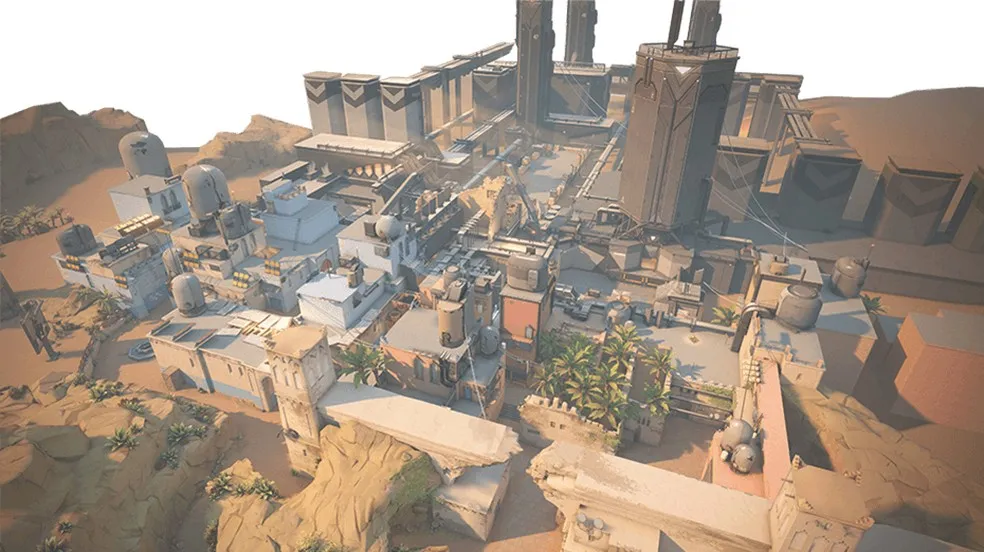

Valorant Documentation
What is Valorant?
Valorant is a tactical first-person shooter developed and published by Riot Games. Released in 2020, it combines elements of traditional FPS gameplay with unique character abilities. Players assume the roles of agents, each possessing distinct abilities that influence gameplay strategy and team dynamics.
Benefits of Valorant
- Strategic Gameplay: Valorant encourages teamwork and strategic planning, requiring players to communicate and coordinate with their teammates.
- Character Diversity: With a wide range of agents, each with unique abilities, players can adapt their playstyle to suit their strengths and preferences.
- Competitive Environment: Valorant offers a robust competitive scene with ranked play, fostering a sense of achievement and progression.
- Community Engagement: The game features active community events and support from developers, creating an engaging player experience.
Agents
-
Jett

Role: Duelist
Abilities:
- Cloudburst: Throws a projectile that expands into a brief vision-blocking cloud on impact.
- Updraft: Propels Jett upwards.
- Tailwind: Dash a short distance in the direction she’s moving.
- Blade Storm: Equip throwing knives that deal critical damage.
-
Sova

Role: Initiator
Abilities:
- Owl Drone: Control a drone that can be used to scout enemies.
- Recon Bolt: Fires a bolt that reveals enemies in its radius.
- Shock Bolt: Fires a bolt that deals damage in a radius.
- Hunter's Fury: Fire three powerful energy blasts that deal damage and reveal enemies.
-
Sage

Role: Sentinel
Abilities:
- Barrier Orb: Creates a large wall that can be rotated.
- Slow Orb: Creates a zone that slows enemies.
- Healing Orb: Heals an ally over time.
- Resurrection: Revives a fallen ally with full health.
Maps
-
Bind

Description: Bind features teleporters that connect different areas of the map.
Key Points:
- Two teleporters: One on each side of the map.
- Open spaces allow for strategic play.